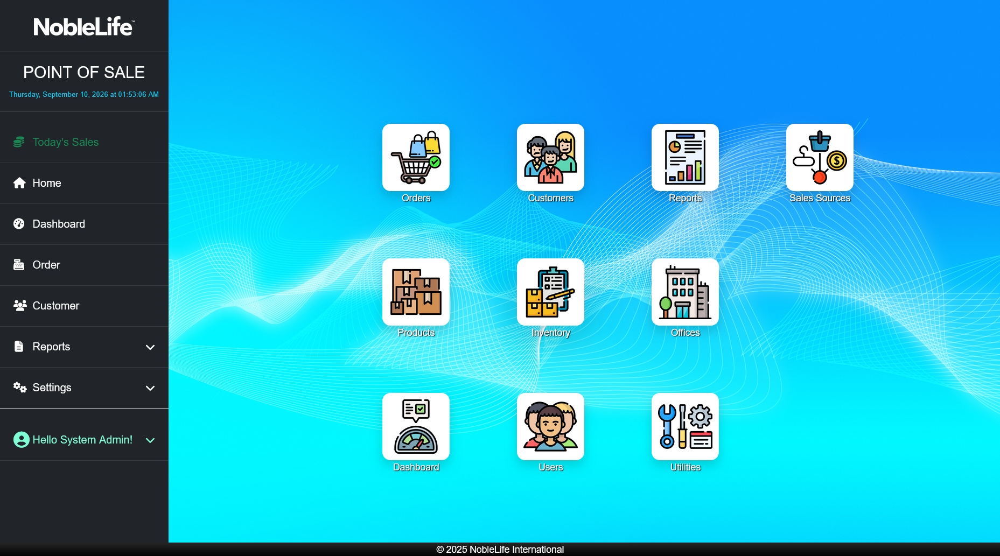

Getting Started
Use a current web browser on your organization's approved network. Ask your administrator for the NLI-POS web address and the account credentials issued to you.
Sign in
- Open the NLI-POS web address provided by your administrator. Expected result: The sign-in page appears.
- Enter your account email in Email. Expected result: Your email appears in the field.
- Enter your password in Password. Expected result: Your password is hidden in the field.
- Select Remember me? only on a trusted, private device. Expected result: The app may remember your sign-in on this device.
- Select Log In. Expected result: The application opens the home page or the page you requested.
If you cannot sign in, check the web address and account details. Use Forgot your password? if it is available for your account, or ask your administrator for help.
 Figure: Sign in with the email and password issued for your account (screenshot to be added)
Figure: Sign in with the email and password issued for your account (screenshot to be added)
Find your way around
- After signing in, open the left navigation. On a tablet or smaller screen, open Menu first. Expected result: The navigation links appear.
- Select Home for shortcuts or Dashboard for sales indicators and charts.
- Select Order to find orders or start a sale, and Customer to find customer records.
- Open Reports to choose a sales report.
- If you are an administrator, open Settings to manage users and store setup.
- Select Help at any time to browse this guide. Expected result: The Help chapter list appears beside the selected chapter.
- Open the signed-in user menu to select Manage Account or Logout.

Figure: Use Home and the left navigation to reach the main work areas.Review your account
- Open the signed-in user menu and select Manage Account. Expected result: Your account page opens.
- Choose Profile, Email, or Password in the account navigation.
- Update the fields on the selected page and save the change. Expected result: A message confirms whether the update succeeded.
- Select Logout when you finish on a shared device.
First-time access
- Ask your administrator to confirm that your account is active and has the correct role. Expected result: Your account can open the pages required for your work.
- Confirm that you have access to the office or offices where you work. Expected result: Your assigned office appears in the relevant lists.
- Ask your administrator to confirm that the required products, prices, stock, customer classes, and payment methods are available. Expected result: The options you need are available when you enter an order.
Figure: Manage Account shows your profile and account options (screenshot to be added)